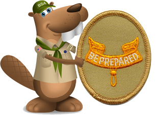

Second Class Rank

All requirements for the Second Class rank must be completed as a member of a troop or as a Lone Scout.
The requirements for Scout, Tenderfoot, Second Class, and First Class ranks may be worked on simultaneously; however, these ranks must be earned in sequence.
Alternate requirements for the Second Class rank are available for Scouts with physical or mental disabilities if they meet the criteria listed in the Scouts BSA Requirements book.
Second Class Rank Requirements
1.
Do the following:
1a. Since joining Scouts BSA, participate in five separate troop/patrol activities, at least three of which must be held outdoors. Of the outdoor activities, at least two must include overnight camping. These activities do not include troop or patrol meetings. On campouts, spend the night in a tent that you pitch or other structure that you help erect, such as a lean-to, snow cave, or tepee.
1b. Explain the principles of Leave No Trace and tell how you practiced them on a campout or outing. This outing must be different from the one used for Tenderfoot requirement 1c.
1c. On one of these campouts, select a location for your patrol site and recommend it to your patrol leader, senior patrol leader, or troop guide. Explain what factors you should consider when choosing a patrol site and where to pitch a tent.
2.
Do the following:
2a. Explain when it is appropriate to use a fire for cooking or other purposes and when it would not be appropriate to do so.
2b. Use the tools listed in Tenderfoot requirement 3d to prepare tinder, kindling, and fuel wood for a cooking fire.
2c. At an approved outdoor location and time, use the tinder, kindling, and fuel wood from Second Class requirement 2b to demonstrate how to build a fire. Unless prohibited by local fire restrictions, light the fire. After allowing the flames to burn safely for at least two minutes, safely extinguish the flames with minimal impact to the fire site.
2d. Explain when it is appropriate to use a lightweight stove and when it is appropriate to use a propane stove. Set up a lightweight stove or propane stove. Light the stove, unless prohibited by local fire restrictions. Describe the safety procedures for using these types of stoves.
2e. On one campout, plan and cook one hot breakfast or lunch, selecting foods from MyPlate or the current USDA nutritional model. Explain the importance of good nutrition. Demonstrate how to transport, store, and prepare the foods you selected.
2f. Demonstrate tying the sheet bend knot. Describe a situation in which you would use this knot.
2g. Demonstrate tying the bowline knot. Describe a situation in which you would use this knot.
3.
Do the following:
3a. Demonstrate how a compass works and how to orient a map. Use a map to point out and tell the meaning of five map symbols.
3b. Using a compass and map together, take a 5-mile hike (or 10 miles by bike) approved by your adult leader and your parent or guardian. If you use a wheelchair or crutches, or if it is difficult for you to get around, you may substitute "trip" for "hike" in requirement 3b.
3c. Describe some hazards or injuries that you might encounter on your hike and what you can do to help prevent them. If you use a wheelchair or crutches, or if it is difficult for you to get around, you may substitute "trip" for "hike" in requirement 3c.
3d. Demonstrate how to find directions during the day and at night without using a compass or an electronic device.
4.
Identify or show evidence of at least 10 kinds of wild animals (such as birds, mammals, reptiles, fish, or mollusks) found in your local area or camping location. You may show evidence by tracks, signs, or photographs you have taken.
5.
Do the following:
Under certain exceptional conditions, where the climate keeps the outdoor water temperature below safe levels yearround, or where there are no suitably safe and accessible places (outdoors or indoors) within a reasonable traveling distance to swim at any time during the year, the council Scout executive and advancement committee may, on an individual Scout basis, authorize an alternative for requirements 6a and 6e. The local council may establish appropriate procedures for submitting and processing these types of requests. All the other requirements, none of which necessitate entry in the water or entry in a watercraft on the water, must be completed as written.
5a. Tell what precautions must be taken for a safe swim.
5b. Demonstrate your ability to pass the BSA beginner test: Jump feetfirst into water over your head in depth, level off and swim 25 feet on the surface, stop, turn sharply, resume swimming, then return to your starting place.
5c. Demonstrate water rescue methods by reaching with your arm or leg, by reaching with a suitable object, and by throwing lines and objects.
5d. Explain why swimming rescues should not be attempted when a reaching or throwing rescue is possible. Explain why and how a rescue swimmer should avoid contact with the victim.
6.
Do the following:
6a. Demonstrate first aid for the following:
• Object in the eye
• Bite of a warm-blooded animal
• Puncture wounds from a splinter, nail, and fishhook
• Serious burns (partial thickness, or second-degree)
• Heat exhaustion
• Shock
• Heatstroke, dehydration, hypothermia, and hyperventilation
6b. Show what to do for "hurry" cases of stopped breathing, stroke, severe bleeding, and ingested poisoning.
6c. Tell what you can do while on a campout or hike to prevent or reduce the occurrence of the injuries listed in Second Class requirements 6a and 6b.
6d. Explain what to do in case of accidents that require emergency response in the home and backcountry. Explain what constitutes an emergency and what information you will need to provide to a responder.
6e. Tell how you should respond if you come upon the scene of a vehicular accident.
7.
Do the following:
7a. After completing Tenderfoot requirement 6c, be physically active at least 30 minutes each day for five days a week for four weeks. Keep track of your activities.
7b. Share your challenges and successes in completing Second Class requirement 7a. Set a goal for continuing to include physical activity as part of your daily life and develop a plan for doing so.
7c. Participate in a school, community, or troop program on the dangers of using drugs, alcohol, and tobacco and other practices that could be harmful to your health. Discuss your participation in the program with your family, and explain the dangers of substance addictions. Report to your Scoutmaster or other adult leader in your troop about which parts of the Scout Oath and Scout Law relate to what you learned.
8.
Do the following:
8a. Participate in a flag ceremony for your school, religious institution, chartered organization, community, or Scouting activity.
8b. Explain what respect is due the flag of the United States.
8c. With your parents or guardian, decide on an amount of money that you would like to earn, based on the cost of a specific item you would like to purchase. Develop a written plan to earn the amount agreed upon and follow that plan; it is acceptable to make changes to your plan along the way. Discuss any changes made to your original plan and whether you met your goal.
8d. At a minimum of three locations, compare the cost of the item for which you are saving to determine the best place to purchase it. After completing Second Class requirement 8c, decide if you will use the amount that you earned as originally intended, save all or part of it, or use it for another purpose.
8e. Participate in two hours of service through one or more service projects approved by your Scoutmaster. Tell how your service to others relates to the Scout Oath.
9.
Do the following:
9a. Explain the three R’s of personal safety and protection.
9b. Describe bullying; tell what the appropriate response is to someone who is bullying you or another person.
10.
Demonstrate Scout spirit by living the Scout Oath and Scout Law. Tell how you have done your duty to God and how you have lived four different points of the Scout Law (not to include those used for Tenderfoot requirement 9) in your everyday life.
11.
While working toward the Second Class rank, and after completing Tenderfoot requirement 10, participate in a Scoutmaster conference.
12.
Successfully complete your board of review for the Second Class rank